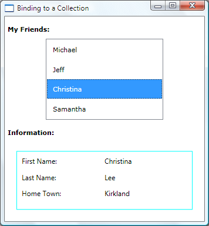

Практическое руководство. Привязка к коллекции и вывод сведений в зависимости от выделенного элемента
В простом сценарии «основной-подробности», у вас есть привязкой к данным ItemsControl например ListBox. В зависимости от выбора пользователя можно отобразить дополнительные сведения о выбранном элементе. В этом примере показано, как реализовать этот сценарий.
Пример
В этом примере People — ObservableCollection<T> из Person классы. Это Person класс содержит три свойства: FirstName, LastName, и HomeTown, все типа string.
<Window x:Class="SDKSample.Window1"
xmlns="http://schemas.microsoft.com/winfx/2006/xaml/presentation"
xmlns:x="http://schemas.microsoft.com/winfx/2006/xaml"
xmlns:local="clr-namespace:SDKSample"
Title="Binding to a Collection"
SizeToContent="WidthAndHeight">
<Window.Resources>
<local:People x:Key="MyFriends"/>
</Window.Resources>
<StackPanel>
<TextBlock FontFamily="Verdana" FontSize="11"
Margin="5,15,0,10" FontWeight="Bold">My Friends:</TextBlock>
<ListBox Width="200" IsSynchronizedWithCurrentItem="True"
ItemsSource="{Binding Source={StaticResource MyFriends}}"/>
<TextBlock FontFamily="Verdana" FontSize="11"
Margin="5,15,0,5" FontWeight="Bold">Information:</TextBlock>
<ContentControl Content="{Binding Source={StaticResource MyFriends}}"
ContentTemplate="{StaticResource DetailTemplate}"/>
</StackPanel>
</Window>
ContentControl Использует следующие DataTemplate определяет, как данные Person представлены:
<DataTemplate x:Key="DetailTemplate">
<Border Width="300" Height="100" Margin="20"
BorderBrush="Aqua" BorderThickness="1" Padding="8">
<Grid>
<Grid.RowDefinitions>
<RowDefinition/>
<RowDefinition/>
<RowDefinition/>
</Grid.RowDefinitions>
<Grid.ColumnDefinitions>
<ColumnDefinition/>
<ColumnDefinition/>
</Grid.ColumnDefinitions>
<TextBlock Grid.Row="0" Grid.Column="0" Text="First Name:"/>
<TextBlock Grid.Row="0" Grid.Column="1" Text="{Binding Path=FirstName}"/>
<TextBlock Grid.Row="1" Grid.Column="0" Text="Last Name:"/>
<TextBlock Grid.Row="1" Grid.Column="1" Text="{Binding Path=LastName}"/>
<TextBlock Grid.Row="2" Grid.Column="0" Text="Home Town:"/>
<TextBlock Grid.Row="2" Grid.Column="1" Text="{Binding Path=HomeTown}"/>
</Grid>
</Border>
</DataTemplate>
Ниже приведен снимок экрана примера. ContentControl Показаны другие свойства выбранного лица.

В этом примере следует обратить внимание на два обстоятельства:
ListBox И ContentControl привязать к одному источнику. Path Свойства обе привязки не заданы, так как оба элемента управления привязаны к всему объекту коллекции.
Необходимо задать IsSynchronizedWithCurrentItem свойства
trueдля правильной работы. Задание этого свойства гарантирует, что выбранный элемент всегда задается как CurrentItem. Кроме того Если ListBox получает данные от CollectionViewSource, он автоматически синхронизирует Выбор и денежные единицы.
Обратите внимание, что Person класса переопределения ToString метод следующим образом. По умолчанию ListBox вызовы ToString и отображает строковое представление каждого объекта в привязанной коллекции. Вот почему каждый Person отображается как имя в ListBox.
public override string ToString()
{
return firstname.ToString();
}
Warning
It looks like the sample you are looking for does not exist.